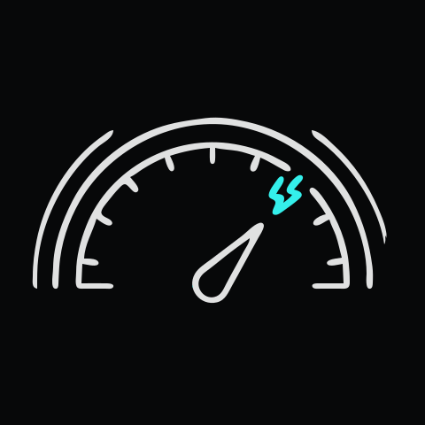
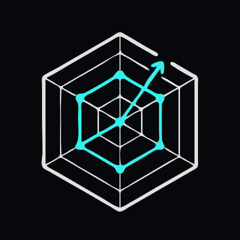
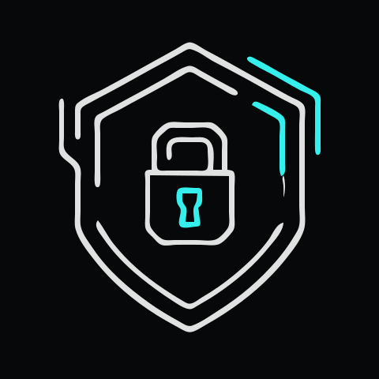

Aim & Precision (Швидкість)
Тренування мікроскілу та зниження Aim Lag на преміальному залізі 360Hz з мінімальним пінгом. Персональні алгоритми розминки перед матчами.
Тренуйся під керівництвом чинних pro-гравців у CS2, Dota 2 та Valorant. Прокачуй скіли, контролюй ігровий час без вигорання, виходь на драфти академій і вигравай перші призові вже за 3 місяці.
360 Hz
Монітори арени
+28%
Ріст Win Rate за 90 днів
100%
Контроль сну та розминки
Наша методологія
Ми створили «КіберЛьвів», щоб перетворити хаотичні години за комп’ютером на зрозумілу кар’єрну траєкторію під керівництвом діючих кіберспортсменів та сертифікованих аналітиків.

Тренування мікроскілу та зниження Aim Lag на преміальному залізі 360Hz з мінімальним пінгом. Персональні алгоритми розминки перед матчами.

Посекундний розбір кожної демки (VOD) із сертифікованим тренером. Аналіз KDA, карти розкидок, таймінгів ротації та командної комунікації, як у про-ростерах.

Ергономічні ігрові місця, обов’язкова фізична розминка щогодини, підтримка спортивних психологів та чіткий розклад, який цінують батьки.
Навчальні програми та тарифи
Структуровані 12-тижневі треки підготовки з готовим портфоліо для драфтів та виходом на офіційні студентські й юніорські ліги.
Поглиблений курс стрільби, префаєрів, економіки раундів та командних ретейків під керівництвом чинних аналітиків сцени.
Опанування пулу агентів, таймінгів ультимейтів, кросхейр-плейсменту та ментальної стійкості у клатч-раундах.
Системне навчання лайнінгу, контролю рун і Рошана, побудови пулу героїв та макро-переміщень по карті.
Адаптаційна програма для підлітків: постановка правильного хвату миші, гігієна гри, комунікація без токсичності та баланс з навчанням.
Підготовка капітанів (In-Game Leaders) та аналітиків. Робота з тепловими картами Faceit, розбір економічних моделей та стратегічний драфт.
Дводенний інтенсив повного занурення на фізичній арені у Львові: тест реакції, 10 годин командної практики, аудит помилок та піца-паті.
Мультимедійний огляд • Ембеддинг
Ознайомтеся з інфраструктурою підготовки ІТ-фахівців та кіберспортсменів: розбір телеметрії, командна взаємодія та лабораторний комплекс.
Адаптивний плеєр 16:9
CSS aspect-ratio без Layout Shift
Ліниве завантаження
Оптимізовано через loading="lazy"
WCAG 2.2 Доступність
Озвучення фрейму через title
Флагманський інструмент
Алгоритм розраховує оптимальний баланс годин гри, сну та фізичної розминки, попереджаючи ризик перевтоми й падіння реакції (Aim Lag).
Оберіть основну гру (CS2, Valorant, Dota 2), поточний рейтинг ELO/MMR та бажану турнірну ціль на найближчі 90 днів.
Вкажіть поточну кількість ігрових годин на добу (від 1 до 16 год) та тривалість сну для виявлення дефіциту швидкості реакції.
Отримайте розклад: розминка Aim (25%), командні праки (45%), розбір VOD (15%) та обов’язкові перерви для здоров’я (15%).
Довіра та безпека
Замість безконтрольного сидіння вночі — прозорий освітній процес із турботою про поставу, зір та шкільну успішність.
Кожні 50 хвилин тренування перериваються на 10-хвилинну розминку спини, шиї та спеціалізовану гімнастику для очей.
З підлітками працюють верифіковані тренери та спортивний психолог, який навчає контролювати емоції без токсичності й тільту.
Відкритий дашборд відвідуваності, дотримання режиму сну та прогресу дисципліни в особистому кабінеті.
Соціальний доказ • Результати
Реальні історії гравців зі Львова, які структурували свій час і вийшли на новий рівень гри.
«За 3 місяці в КіберЛьвів підняв з 1450 до 2250 ELO на Faceit. Головне — перестав грати по 8 годин хаотично: калькулятор показав, що після 4-ї години мій Aim падає на 22%.»
Випускник буткемпу CS2 Pro Aim
«Як мама я нарешті спокійна: син ходить у справжню спортивну секцію на вул. Франка, вчасно лягає спати, робить розминку і вже виграв свій перший студентський турнір.»
Мама учня (група Valorant U-17)
«Розбір демок з тренером дав більше за місяць, ніж два роки соло-пабліків у Dota 2. Чітка телеметрія, круте залізо 360 Hz і топова командна атмосфера!»
Капітан складу Academy Draft
Геолокація та Live-інформери
Тренувальний буткемп «КіберЛьвів» розташований у центрі Львова (вул. Івана Франка, 61). Перевірте маршрут на інтерактивній мапі та актуальні показники часу, погоди й курсу турнірних призових.
Адреса LAN-арени
м. Львів, вул. Івана Франка, 61 (поруч із парком та корпусами Львівської політехніки)
Автономність та безпека
Сертифіковане укриття на -1 поверсі, оптоволокно GPON 1 Гбіт/с та живлення EcoFlow Pro
Стартуй у Pro-Gaming
Залиште контакти — методист академії «КіберЛьвів» проведе тестування швидкості реакції, сформує індивідуальний план тренувань та узгодить зручний розклад із батьками.